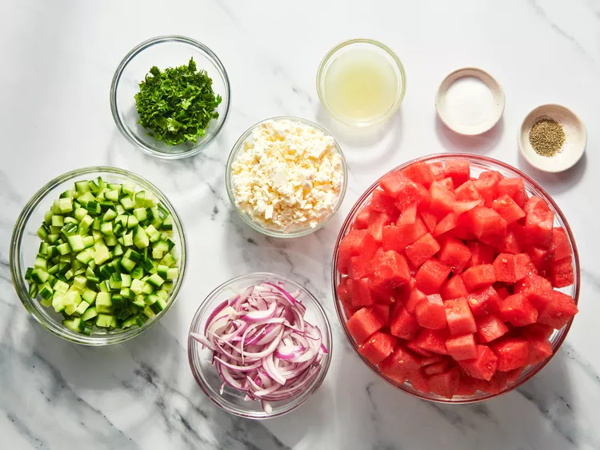
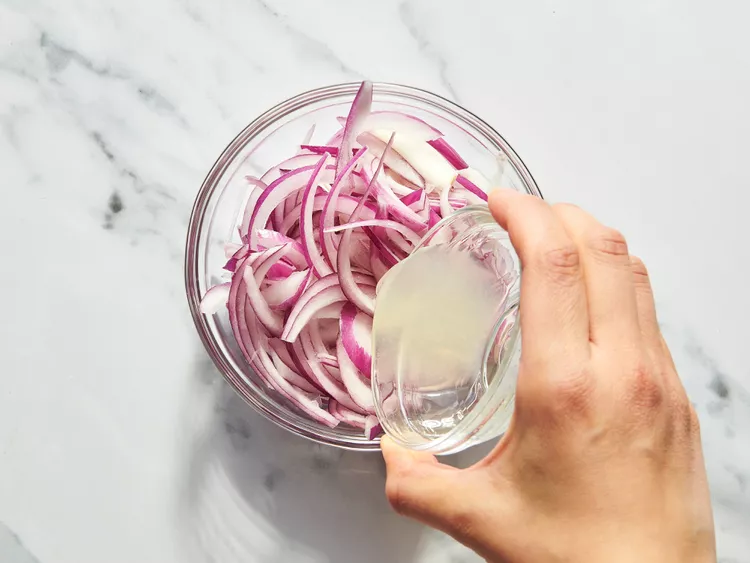
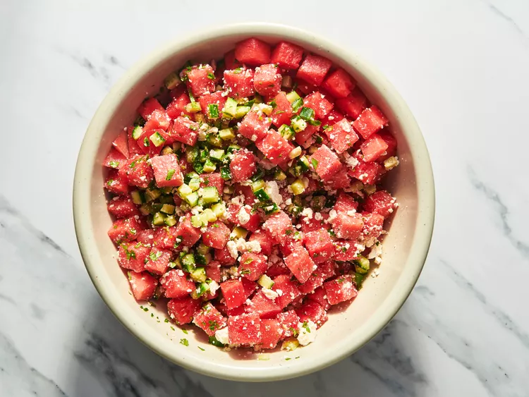
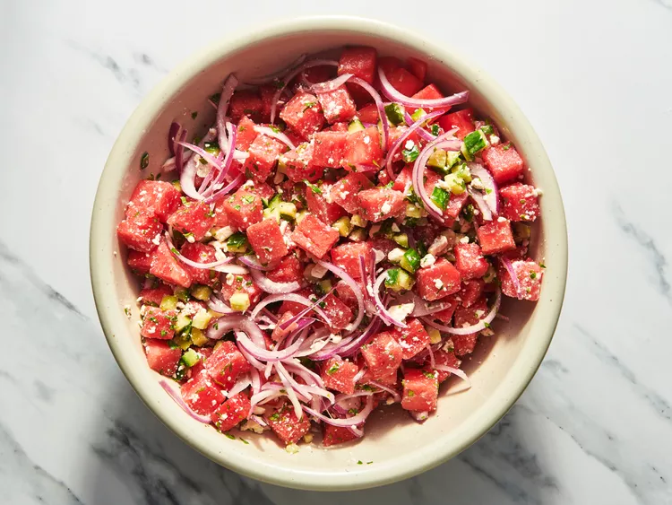
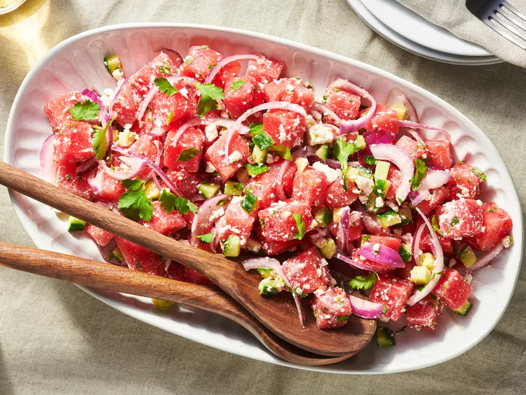

Watermelon Salad

Description
This watermelon salad is a surprising yet delicious combination of juicy watermelon, red onion, cucumber, and feta cheese. The perfect appetizer or light meal on a hot summer day.
Ingredients
- 1 cup sliced red onion, cut lengthwise
- 3 tablespoons lime juice
- 15 cups cubed watermelon
- 3 cups cubed English cucumber
- 1 (8 ounce) package feta cheese, crumbled
- ½ cup chopped fresh cilantro
- cracked black pepper, to taste
- sea salt, to taste
Directions
Step 1
Gather all ingredients.

Step 2
Place red onion slices in a small bowl; pour over lime juice. Allow onions to marinate while assembling the salad.

Step 3
Gently combine watermelon, cucumber, feta cheese, and cilantro in a large bowl; season with black pepper.

Step 4
Toss watermelon salad with marinated onions and season with sea salt just before serving.

Step 5
Serve and enjoy!
